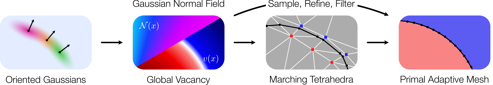
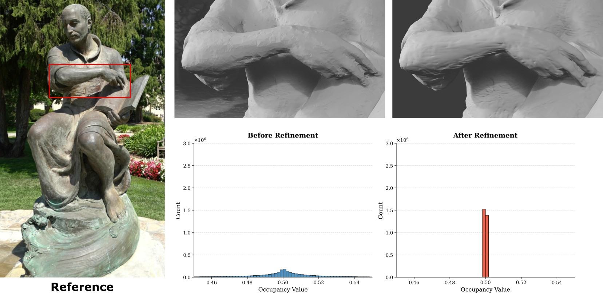

From Blobs to Spokes: High-Fidelity Surface Reconstruction via Oriented Gaussians
Paper arXiv Code Download Meshes VideoTL;DR
Gaussian Wrapping interprets 3D Gaussians as stochastic, oriented surface elements and derives closed-form vacancy and normal fields, enabling fast, watertight, and compact mesh extraction of full 3D scenes.
Fast Training
Training time on average on the T&T dataset.
Watertight
Fully watertight meshes, no need to filter any faces.
Higher Accuracy and Detail Extraction
State-of-the-art F-Score on DTU and Tanks & Temples, recovering thin structures other methods miss.
Lighter Meshes
Using only 2 pivots per Gaussian (as opposed to 9) yield less vertices while retaining quality.
Blender Render Comparisons
Blender renders comparisons on real-world scenes. Drag the slider to compare baseline methods against ours.
Click to pause, then drag the timeline to scrub through frames. Use the vertical slider to compare methods side by side.
Reconstructed Meshes
Interactive 3D meshes extracted by Gaussian Wrapping with Primal Adaptive Meshing (PAM), Blender Mesh Decimation and Draco Compression (GLB) for portability. See our Github for a tutorial on extracting regions of interest with PAM. Click and drag to rotate, scroll to zoom.
|
Bicycle
|
Lego in Kitchen
|
Bonsai
|
Method Overview

Gaussian Wrapping pipeline. Starting from a set of posed images, we train a Gaussian Splatting model augmented with a learnable oriented normal per Gaussian. A normal alignment loss and normal-aware densification enforce a wrapping shell. We then derive closed-form vacancy $v$ and normal field $\mathcal{N}$ from the trained Gaussians, and extract a watertight mesh via Pivot-Based Marching Tetrahedra or our novel Primal Adaptive Meshing.
1. Oriented Gaussians & Gaussian Wrapping
Standard 3DGS treats Gaussians as symmetric “blobs” of density—an interpretation that conflicts with the nature of a surface, which is an asymmetric boundary separating empty space from occupied matter. This symmetry bias pulls reconstructed surfaces inward or outward, and is particularly damaging for thin structures where opposing Gaussian tails interfere.
We address this by endowing each Gaussian with a single learnable oriented normal $n_i \in \mathcal{S}^2$—the only additional parameter in our framework. Each Gaussian now models density decay only on its outward-facing side, while treating the inward-facing side as fully occupied. This reinterprets every Gaussian as a stochastic oriented surface element with a clear inside and outside.
Wrapping the Surface
For reconstruction to work, Gaussians must form a sealed, continuous shell around the object—they must wrap it. We promote this through two complementary mechanisms during training:
- Normal alignment loss. Rendering depth and normals with the splatting rasterizer yields an estimate of the surface depth and the expected orientation of Gaussians near the surface. We enforce alignment between the rendered oriented normals $N(p)$ and the image-space depth gradient $\nabla D(p)$ via: $$\mathcal{L}_{\text{N}} = \sum_{p} 1 - N(p) \cdot \nabla D(p)$$ We modify the CUDA rasterizer to render depth as the exact $0.5$-isosurface of our geometric field via binary search.
- Normal-aware densification. Gaps in the wrapping shell cause $\mathcal{L}_{\text{N}}$ to rise locally. Every $K$ iterations we propagate per-pixel errors back to individual Gaussians via their blending weights, then clone high-error Gaussians with flipped normals—closing holes and reinforcing the shell even around extremely thin structures such as bicycle spokes.
Qualitative Comparisons
Mesh renderings on the Bicycle and Garden scenes (Mip-NeRF 360). Our method recovers significantly finer surface detail and thin structures compared to baselines.
Drag the slider to compare. Our method recovers fine surface detail and closes geometric holes (e.g., bicycle spokes) where competing methods erode geometry or fail entirely.
2. Gaussian Vector & Normal Fields
When Gaussians properly wrap the scene, the Objects as Volumes framework applied to our oriented attenuation yields closed-form geometric quantities directly from the Gaussian parameters—with no additional learnable parameters. Please see our paper and supplementary for the derivation of these formulas.
Gaussian Normal Field
Applying the Objects as Volumes result to our reciprocal attenuation yields our main theoretical contribution: a closed-form vector field $V$ and its normalization $\mathcal{N}$, the Gaussian Normal Field.
Proposition 1 — Gaussian Vector & Normal Fields
$$V(x) := \nabla\log v(x) = \sum_{i=1}^N \mathbf{1}_{n_i^\top(x - \mu_i)\,\geq\, 0}\; \nabla\log\!\left(1 - G_i(x)\right)$$ $$\mathcal{N}(x) := \frac{V(x)}{\|V(x)\|}$$$\mathcal{N}(x)$ is well-defined and coincides with the true normal field of the expected stochastic surface in a neighbourhood of the surface.
These quantities can be queried at any point $x$ in space by considering the $K$-nearest Gaussians. No additional learnable parameters are introduced.
Gaussian normal field aligned with surface normals. Drag the slider to compare. The close agreement between rendered normals and $\mathcal{N}$ confirms the field is well-aligned with the surface.
3. Primal Adaptive Meshing
To decouple mesh resolution from the Gaussian distribution and enable region-of-interest super-resolution, we introduce a five-step pipeline that leverages the global fields $v$ and $\mathcal{N}$:
- Vertices Initialization. Sample vertices from the Pivot-Based MTet mesh faces—optionally restricted to a specific region-of-interest—weighting each face inversely proportional to its distance from the nearest training camera.
-
Isosurface Refinement. Project vertices onto the $0.5$-isosurface of $v$ via the following iterative Newton update, using $\mathcal{N}$ as the geometric guide:
$$x_{i+1} = x_i + \frac{1}{2}\bigl(0.5 - v(x_i)\bigr)\,\mathcal{N}(x_i)$$
- Filtering. Remove vertices with $|0.5 - v(x)| > \epsilon$ as outliers. Repeat stages 1–3 until no points are removed.
- Delaunay. Compute the Delaunay tetrahedralization of the remaining vertices; classify each tetrahedron as inside or outside based on the vacancy of randomly sampled interior points.
- Mesh extraction. Extract triangle faces that separate inside and outside tetrahedra.
This approach effectively decouples mesh resolution from the Gaussian distribution, enabling extremely fine meshing of restricted scene segments. While global distance-based metrics remain largely unchanged—being insensitive to high-frequency detail by construction—the resulting meshes exhibit substantially improved smoothness and reduced discretization artifacts.

Effect of the Newton projection step. Bottom: distribution of vacancy values $v(x)$ before (blue) and after (red) Newton refinement, evaluated on the Ignatius scene with 3M sampled points and 10 refinement steps. After projection, points collapse tightly onto the isosurface $v = 0.5$. Top: qualitative mesh comparison on the Truck scene showing the resulting improvement in surface detail.
Pivot-Based MTet vs. Primal Adaptive Meshing
Primal Adaptive Meshing on restricted scene segments. Drag the slider to compare. PAM produces topologically clean surfaces that faithfully reflect the underlying Gaussian isosurface, free of staircase artifacts.
Acknowledgements
We are grateful to George Drettakis for insightful discussions. Parts of this work were supported by the ERC Consolidator Grant "VEGA" (No. 101087347), the ERC Advanced Grant "explorer" (No. 101097259), as well as gifts from Ansys Inc., and Adobe Research.
BibTeX
@misc{gomez2026blobsspokeshighfidelitysurface,
title={From Blobs to Spokes: High-Fidelity Surface Reconstruction via Oriented Gaussians},
author={Diego Gomez and Antoine Guédon and Nissim Maruani and Bingchen Gong and Maks Ovsjanikov},
year={2026},
eprint={2604.07337},
archivePrefix={arXiv},
primaryClass={cs.CV},
url={https://arxiv.org/abs/2604.07337},
}